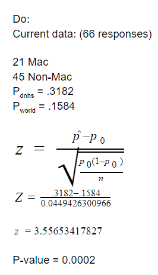

<body style="background-color: #5B3B8C;">  </body>


<style>
    .grid-container {
        display: grid;
        grid-template-rows: 200px 50px;
        grid-template-columns: auto auto auto auto auto;
        grid-gap: 10px;
        padding: 10px;
    }
    p.ex1 {
  text-align: center;
  }
  h2.ex1 {
  text-align: center;
}

    .column {
    float: left;
    width: 50%;
    text-align: center;
}
    .grid-container > div {
        text-align: center;
        padding: 10px;
        font-size: 30px;
    }

    h1 {
        font-family: "verdana";
        text-align: center;
        font-size:55px;
    }
    h2 {
        font-family: "Trebuchet MS";

        font-size:25px
    }
    html, body {
        background-color: #5B3B8C;
    }
    p {
        font-family: "verdana"
    }
    a.btn {
        font-family: "Trebuchet MS";
        width: 30%;
    }
    .btn:link,
    .btn:visited {
        text-transform: uppercase;
        text-decoration: none;
        display: inline-block;
        border-radius: 100px;
        transition: all .2s;
        color: lightpink;
        font-size: 20px;
        font-weight: 900;
    }

    .btn:hover {
        transform: translateY(-3px);
        box-shadow: 0 20px 40px rgba(255, 255, 255, 0.2);
    }

    .btn:active {
        transform: translateY(-1px);
        box-shadow: 0 5px 10px rgba(255, 255, 255, 0.2);
    }

    a.name {
        font-family: verdana;
        font-size: 20px;
    }

    body.dark-mode {
        background-color: #35363a;
    }
    html.dark-mode {
        background-color: #35363a;
    }
</style>


<center>
  <h1> Significance Test </h1>
  <embed type="text/html" src="test.html" width="1000" height="500">
  <p> In order to test if Del Norte students use Macs at a higher rate than the world, we conducted a 1 sample z test for proportions. </p>
</center>
<br>
<br>
<h2 class = "ex1"> Significance Level:</h2>
<p class = "ex1"> a = 0.05</p>
<br>
<h2 class = "ex1"> Hypotheses: <br> </h2>
<p class = "ex1"> H<sub>0</sub>: p<sub>DNHS</sub> = .1584 <br> H<sub>a</sub>: p<sub>DNHS</sub> > .1584 </p>


<br>
<h2 class = "ex1"> Paramater: <br> </h2>
<p class = "ex1"> Proportion of Mac users at Del Norte</p>
<br>
<h2 class = "ex1"> Calculations: </h2>
<center></center><br><br><br>


<h2 class = "ex1"> Analysis: </h2>
<p class="ex1">Assuming that Del Norte’s student body has the same proportion of mac users as the world, <br> there is a 0.02% chance or a p value of 0.0002 of getting a sample with a mac user proportion of 0.3182 or greater.<br> Since the calculated p-value of .0002 is lower than our confidence level of .05, we can reject the null hypothesis,<br> we have evidence that says that the proportion of Mac users in Del Norte is greater than the proportion of Mac users worldwide.
</p>
<br>
<br>
<br>
